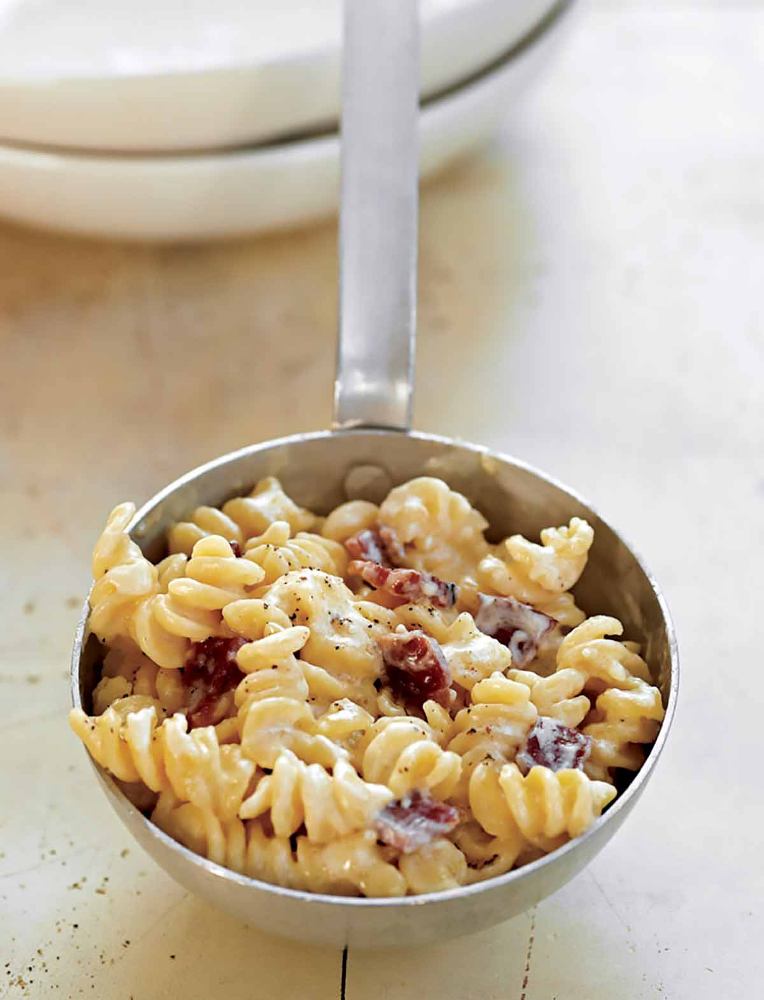

Cheesy Bacon Pasta

Keep reading to find a tasty but quick and easy chessy pasta recipe
Ingredients
- 300g Pasta
- 100g Cheddar cheese
- 1 Tbsp Plain flour
- 2 Tbsp butter
- 250mls mik
- 250g Bacon lardons
Cooking instructions
- Boil the pasta
- While pasta is boiling, fry bacon lardons in a pan. Once crispy, set aside
- Melt butter in a pan
- Add flour to melted flour and whisk to form a roux
- Add a splash of milk and continue to whisk
- Gradually add the milk and continue to whisk
- Once all the milk has been added and the sauce is smooth remove form the heat.
- Add the cheese and stir until melted
- Add the bacon and pasta to the sauce and stir together